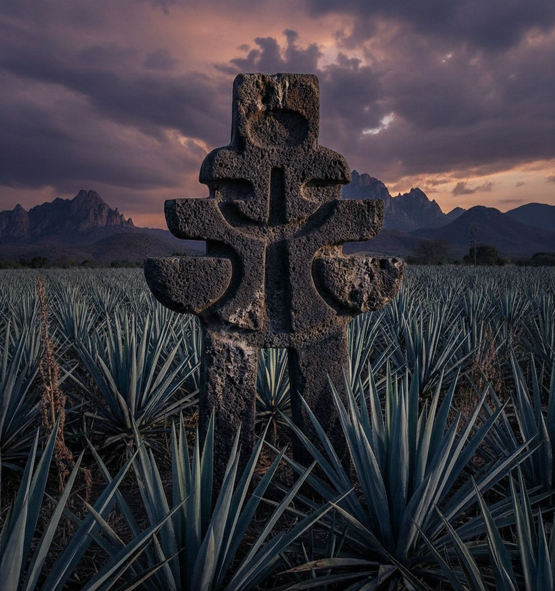
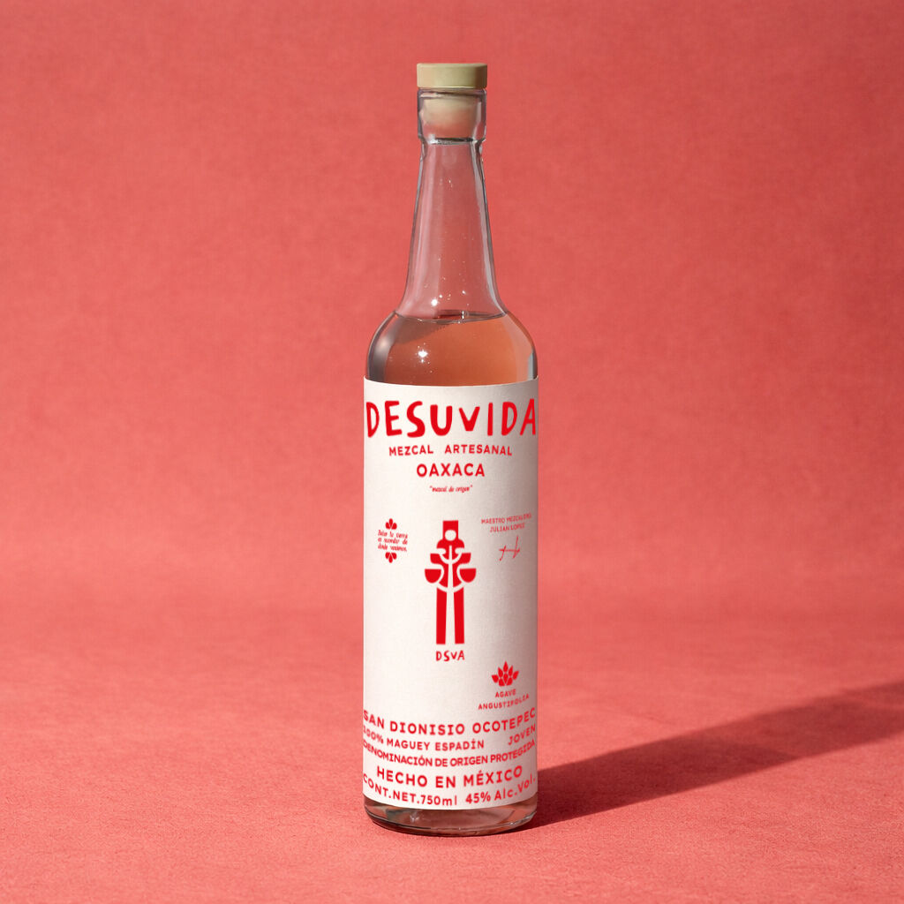
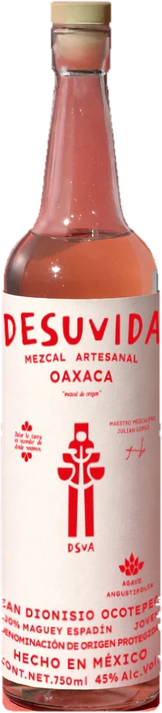
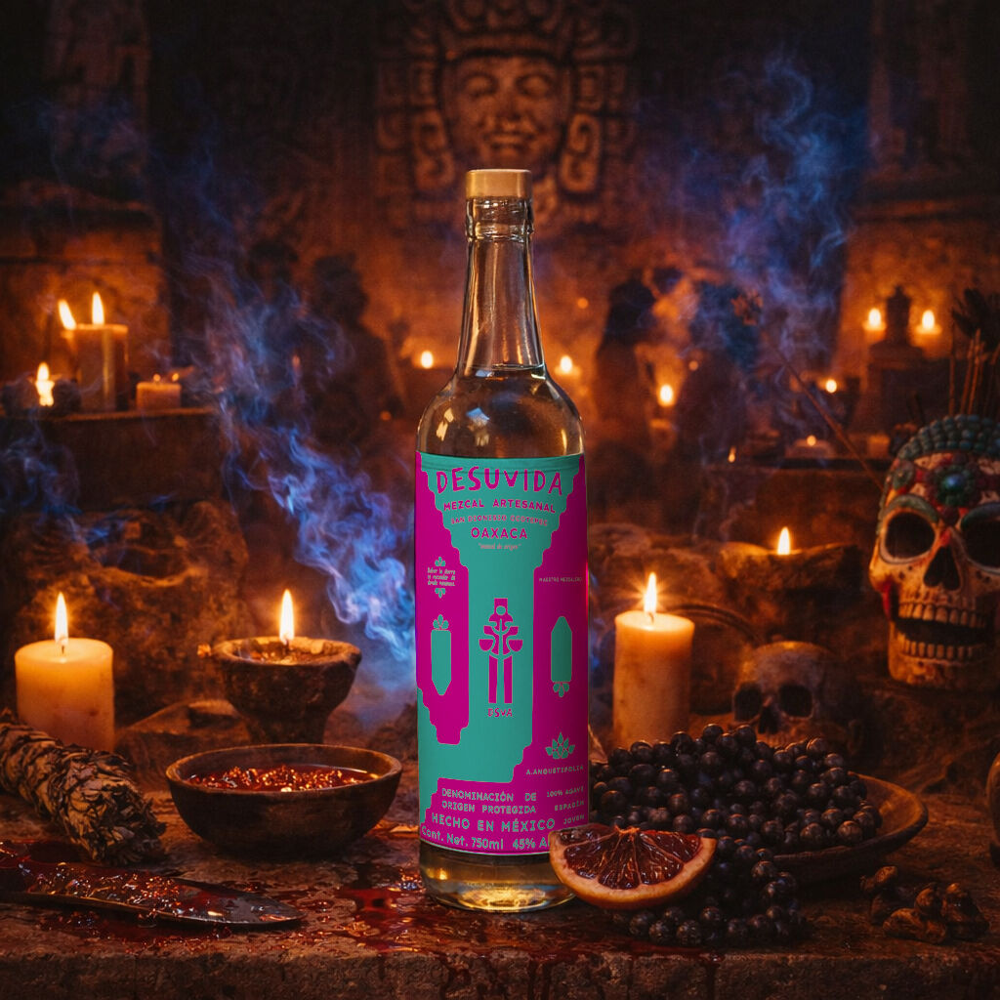
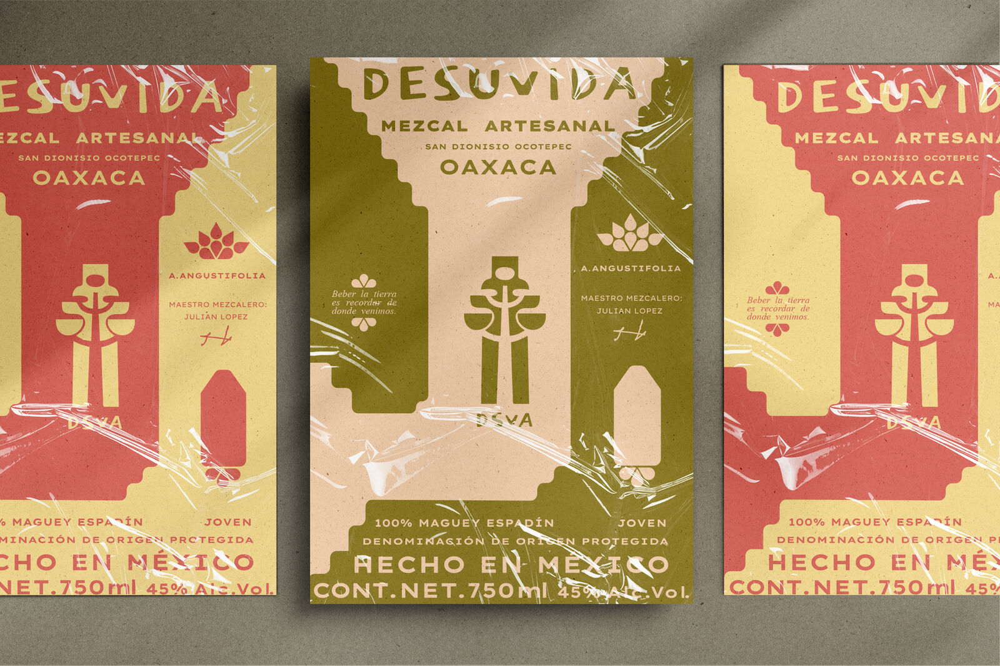
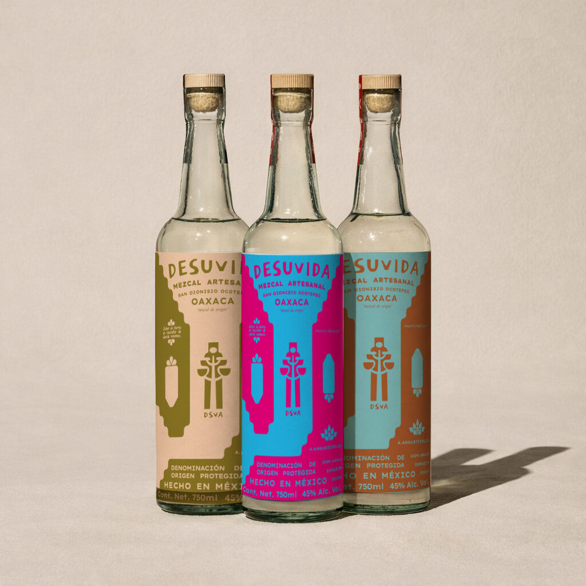
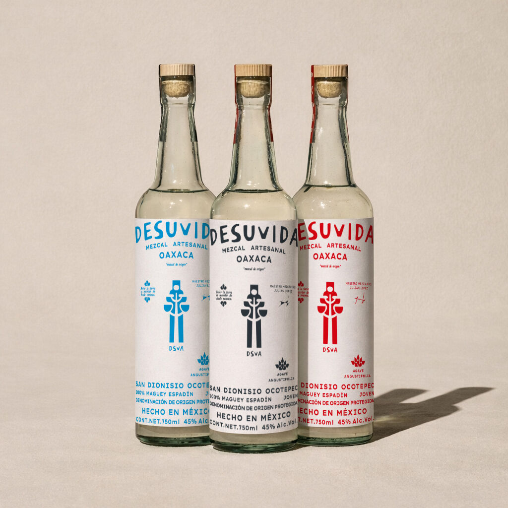
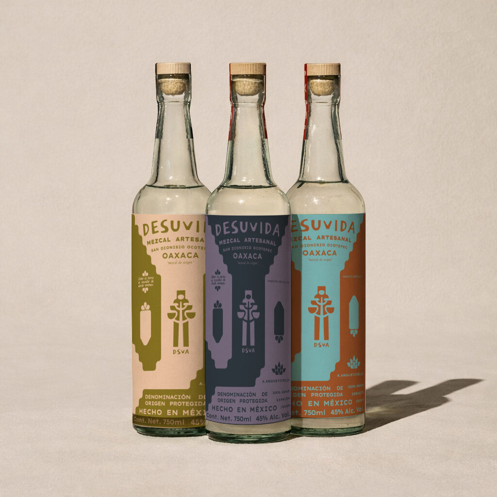

Desuvida


Mezcal espadín joven de San Dionisio Ocotepec
Beber la tierra es recordar de dónde venimos.
- Origen
- San Dionisio Ocotepec, Oaxaca
- Maguey
- 100 % espadín
- Estilo
- Joven, 45 % Alc. Vol.
Desuvida quiere decir de su vida
Honra la vida, el trabajo y la historia de las personas que sostienen el proceso ancestral del mezcal.
También habla de crecer: cada botella como símbolo de identidad y comunidad, para las nuevas generaciones.
Espadín joven, a 45 grados
Mezcal artesanal, “mezcal de origen”
- Maguey
- 100 % espadín, Agave angustifolia. Joven.
- Origen
- San Dionisio Ocotepec, Oaxaca
- Maestro mezcalero
- Julián López
- Botella
- 750 ml, 45 % Alc. Vol.
Denominación de Origen Protegida. Hecho en México.

Los signos de la etiqueta
- Flor de quiote
- Agave, vista lateral
- Agave, vista superior
- Flor
Ocho tintas para una etiqueta
Cada botella toma sus colores de la gama de la marca.
-

Olivo, magenta y turquesa
-

Cian, azul noche y rojo, sobre blanco
-

Olivo, pizarra y turquesa
Pide tu espadín de Ocotepec
Escríbenos para pedidos, distribución o una visita.
- [WHATSAPP]
- Teléfono
- [TELÉFONO]
- Dirección
- [DIRECCIÓN]
- Horario
- [HORARIOS]
Venta exclusiva a mayores de 18 años.